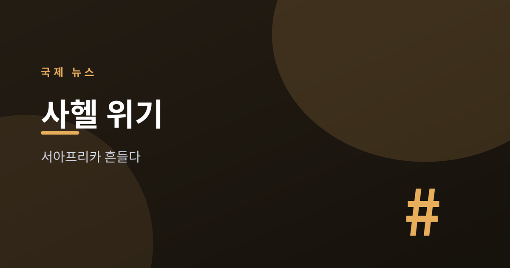
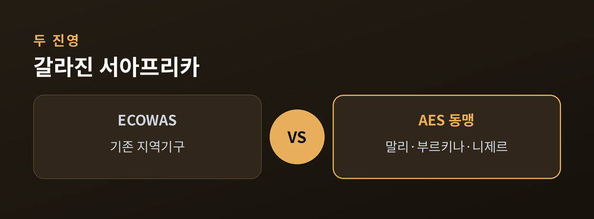
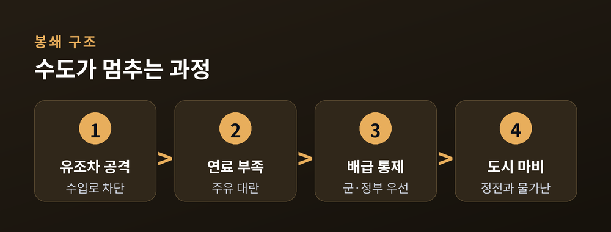
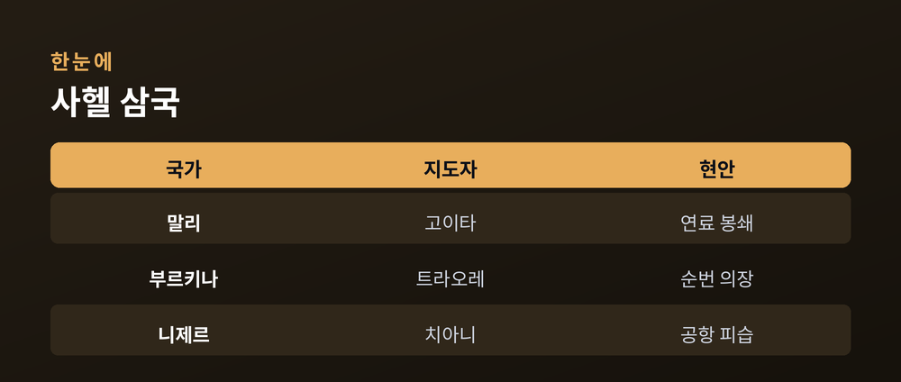
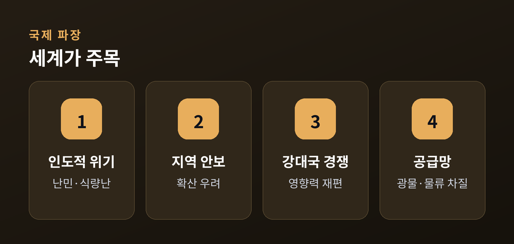

수도를 옥죄는 '연료 봉쇄'와 흔들리는 서아프리카
2026년 7월, 아프리카 사헬 지대가 국제사회의 시선을 다시 끌어모으고 있습니다. 유엔 안전보장이사회가 이달 서아프리카·사헬 정세를 다루는 공개 브리핑을 예정하면서, 말리 수도 바마코를 옥죄어 온 알카에다 연계 무장세력의 '연료 봉쇄'와 군사정권들이 결성한 새 동맹의 앞날이 다시 도마 위에 올랐습니다.
사헬은 사하라 사막 남쪽 가장자리를 가로지르는 광대한 반건조 지대입니다. 말리, 부르키나파소, 니제르 세 나라는 최근 몇 년 사이 잇따른 쿠데타로 군사정권이 들어섰고, 서아프리카경제공동체(ECOWAS)를 떠나 독자 노선을 걷고 있습니다. 이 글에서는 지금 무슨 일이 벌어지고 있는지, 그 배경과 국제적 의미, 그리고 앞으로의 갈림길을 차분히 짚어 보겠습니다.

지금 서아프리카는 크게 두 갈래로 갈라져 있습니다. 한쪽에는 오랫동안 지역 통합을 이끌어 온 서아프리카경제공동체(ECOWAS)가 있고, 다른 한쪽에는 말리·부르키나파소·니제르가 2023년에 결성한 사헬국가동맹(AES, Alliance of Sahel States)이 있습니다. 세 나라는 2025년 1월 ECOWAS에서 공식 탈퇴하며 수십 년간 이어진 지역 질서에 균열을 냈습니다.
AES 3국은 옛 식민 종주국과의 관계를 정리하고 '주권 회복'을 내세우며 독자적인 안보·경제 협력을 추진하고 있습니다. 이들은 스스로를 외세의 간섭에서 벗어나려는 자주 노선으로 규정합니다. 반면 비판론자들은 선거로 뽑히지 않은 군사정권이 언론과 반대 세력을 통제하면서도 정작 치안은 나아지지 않았다고 지적합니다. 어느 쪽 주장이 옳은지 단정하기 어려운 복잡한 국면이며, 그만큼 사실관계를 균형 있게 살피는 일이 중요합니다.

가장 시급한 현안은 말리에서 벌어지는 연료 봉쇄입니다. 알카에다와 연계된 무장세력 JNIM(이슬람·무슬림 지지단)은 2025년 9월 무렵부터 말리로 들어오는 연료 수송로를 겨냥해 유조차 행렬을 반복적으로 공격해 왔습니다. 여러 보도에 따르면 이 과정에서 불에 탄 유조차만 300대가 넘는 것으로 집계됩니다.
말리는 바다에 접하지 않은 내륙국으로, 연료의 약 95%를 육로 수입에 의존합니다. 세네갈·모리타니·코트디부아르 등 이웃 나라에서 도로로 들어오는 연료가 끊기면, 총 한 발 쏘지 않고도 수도가 마비될 수 있는 구조입니다. 현지에서는 긴 주유 대기 행렬, 군과 정부 기관을 우선하는 배급, 발전량 감소로 밤이 어두워진 도시의 모습이 전해집니다. JNIM은 2026년 4월 말 바마코에 대한 전면 봉쇄를 선언했다고 알려졌습니다.
봉쇄는 무장세력의 전술이 총격전에서 경제적 목 조르기로 옮겨 갔음을 보여 줍니다. 이런 방식은 군사적 방어선만으로는 막기 어렵고, 피해는 결국 연료와 식량을 구하지 못하는 일반 주민에게 돌아간다는 점에서 인도적 우려가 큽니다.

AES는 2023년 상호 방위를 목적으로 출발해, 2024년 7월 니제르 니아메 정상회의에서 연합체(confederation) 창설 조약으로 결속을 다졌습니다. 세 나라는 순번제 의장을 두고 있으며, 부르키나파소의 이브라힘 트라오레가 2025년 말부터 순번 의장을 맡고 있는 것으로 전해집니다.
안보 측면에서 3국은 지하드 무장세력에 맞서기 위한 공동 병력을 꾸렸고, 그 규모를 2026년 봄에 크게 늘린 것으로 알려졌습니다. 다만 병력 확충에도 불구하고 말리의 봉쇄와 니제르 수도 공항 피습 등 크고 작은 공격이 이어지면서, 안보 성과에 대한 평가는 엇갈립니다.

사헬 위기는 그 지역만의 문제가 아닙니다. 첫째, 인도적 차원에서 전투와 봉쇄로 삶터를 잃은 주민과 국경을 넘는 난민이 늘고 있습니다. 둘째, 지역 안보 측면에서 무장세력의 활동이 인접한 서아프리카 연안국으로 번질 수 있다는 우려가 큽니다.
셋째, 강대국 경쟁의 무대라는 점입니다. AES 3국이 옛 서방 파트너와 거리를 두는 사이, 여러 외부 세력이 안보·자원 협력을 두고 영향력을 겨루고 있습니다. 넷째, 사헬은 금 등 광물 자원과 물류의 요충지여서, 불안정이 길어지면 공급망과 지역 경제에 파장이 미칠 수 있습니다. 이런 이유로 유엔 안보리를 비롯한 국제사회가 이 지역을 예의 주시하고 있습니다.

2026년 7월 유엔 안보리의 서아프리카·사헬 브리핑은 국제사회가 이 위기를 어떻게 다룰지 가늠하는 자리입니다. 봉쇄가 길어질수록 주민 피해가 커지는 만큼, 인도적 접근로 확보와 지역 협력이 시급한 과제로 꼽힙니다. 동시에 AES와 ECOWAS가 완전히 등을 돌릴지, 아니면 최소한의 협력 통로를 남길지도 사헬의 미래를 좌우할 변수입니다.
분명한 것은, 사헬 문제에 손쉬운 해법은 없다는 점입니다. 군사적 대응만으로도, 외부의 개입만으로도 풀리지 않는 다층적 위기이기 때문입니다. 앞으로 이어질 협상과 국제 논의를 균형 잡힌 시선으로 지켜볼 필요가 있습니다.
참고: 알자지라, BBC, 로이터, 국제위기그룹(ICG), CSIS, 유엔 안전보장이사회 월간 보고서